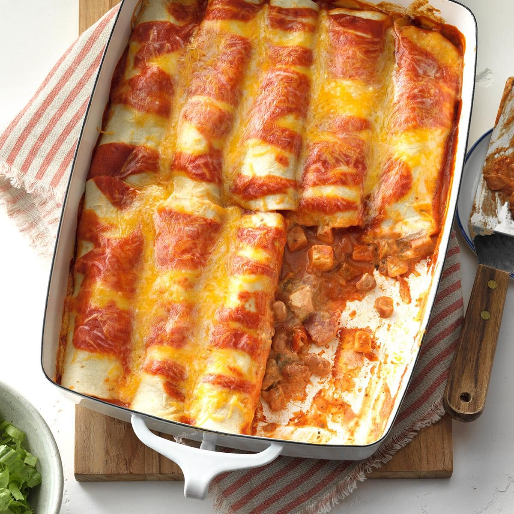

Enchliadas
Bake Time: 25min
Prep Time: 20min
Reviews: 4.6 Stars
Serving: 8 Enchiladas

Ingredients
- 2 cups cooked chicken
- Cream Cheese
- 1 can of red enchilada sauce
- Salsa
- Green Chiles
- Beans
- Tortillas
- Cheese
Directions
- Spoon 1/2 cup enchilada sauce into a greased 13×9-inch baking dish. In a large saucepan, cook and stir the cream cheese and salsa over medium heat until blended, two to three minutes. Stir in the chicken, beans and chiles
- Place about 1/3 cup chicken mixture down the center of each tortilla. Roll up and place seam side down over the sauce. Top with remaining enchilada sauce, and sprinkle with cheese.
- Cover and bake at 350°F until heated through, 25 to 30 minutes. If desired, serve with lettuce, tomato, sour cream and olives
- Enjoy